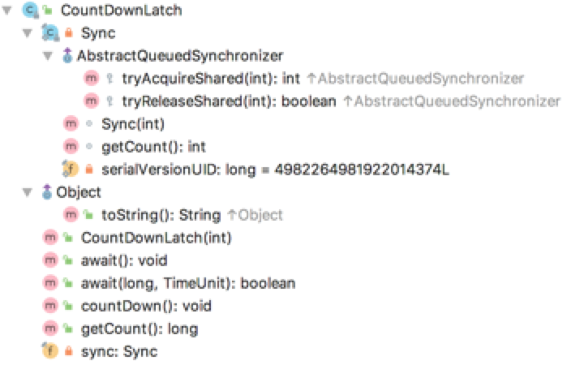

CountDownLatch
基础
CountDownLatch是在jdk1.5引入的，在java.util.concurrent包下，允许一个或多个线程等待直到其他线程完成操作。CountDownLatch通过计数器来实现，初始值为线程的数量，每执行完一个线程计数器减1，直到变成0，调用await方法的线程才能继续执行。

1、CountDownLatch也是基于AQS（AbstractQueuedSynchronizer）实现，里面的Sync实现了tryAcquireShared和tryReleaseShared方法
2、CountDownLatch(int)初始化的时候，是把AQS的state设置成初始值的大小
public CountDownLatch(int count) {
if (count < 0) throw new IllegalArgumentException("count < 0");
this.sync = new Sync(count);
}
Sync(int count) {
setState(count);
}
假如：state=2，表示已经有两个占用了共享锁。
3、countDown方法
public void countDown() {
sync.releaseShared(1);
}
public final boolean releaseShared(int arg) {
if (tryReleaseShared(arg)) {
doReleaseShared();
return true;
}
return false;
}
protected boolean tryReleaseShared(int releases) {
// Decrement count; signal when transition to zero
for (;;) {
int c = getState();
if (c == 0)
return false;
int nextc = c-1;
if (compareAndSetState(c, nextc))
return nextc == 0;
}
}
private void doReleaseShared() {
for (;;) {
Node h = head;
if (h != null && h != tail) {
int ws = h.waitStatus;
if (ws == Node.SIGNAL) {
if (!compareAndSetWaitStatus(h, Node.SIGNAL, 0))
continue; // loop to recheck cases
unparkSuccessor(h);
}
else if (ws == 0 &&
!compareAndSetWaitStatus(h, 0, Node.PROPAGATE))
continue; // loop on failed CAS
}
if (h == head) // loop if head changed
break;
}
}
4、await
public void await() throws InterruptedException {
sync.acquireSharedInterruptibly(1);
}
public final void acquireSharedInterruptibly(int arg)
throws InterruptedException {
if (Thread.interrupted())
throw new InterruptedException();
if (tryAcquireShared(arg) < 0)
doAcquireSharedInterruptibly(arg);
}
5、countDownLatch就是共享锁的释放和获取。
6、CountDownLatch与join方法的区别，一个区别是调用一个子线程的join方法后，该线程会一直被阻塞到该线程运行完毕，而CountDownLatch则使用计数器允许子线程运行完毕或运行中时候递减计数，也就是说CountDownLatch可以在子线程运行任何时候让await方法返回而不一定必须等到线程结束。
7、示例代码
public class CountDownLatchTest {
@Test
public void test() {
final CountDownLatch countDownLatch = new CountDownLatch(2);
Thread thread1 = new Thread(new Runnable() {
@Override
public void run() {
try {
Thread.sleep(3 * 1000);
} catch (InterruptedException e) {
e.printStackTrace();
}
System.out.println("thread1- is over");
countDownLatch.countDown();
}
});
Thread thread2 = new Thread(new Runnable() {
@Override
public void run() {
try {
Thread.sleep(4 * 1000);
} catch (InterruptedException e) {
e.printStackTrace();
}
System.out.println("thread2- is over");
countDownLatch.countDown();
}
});
thread1.start();
thread2.start();
try {
countDownLatch.await();
} catch (InterruptedException e) {
e.printStackTrace();
}
System.out.println("main- is over");
}
}
场景
1、任务协同，其它多个任务结束之后当前任务可以开始
2、获取zookeeper实例的时候，等待连接完成